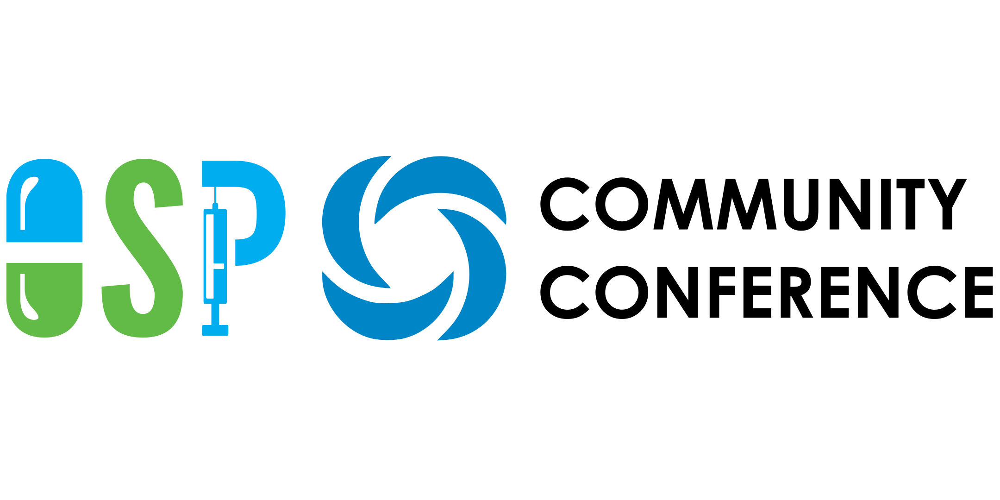

Toggle navigation
Essentials
News & Release
Resources
Tutorials
Publications & Models
Management Team
Newsletter
Conference

Welcome & Keynote
Welcome from the OSP Management Team
The “Leaves” of the OSP Suite
Session I: Physiologically Based Biopharmaceutics Modelling (PBBM)
Leveraging OSP for developing dissolution safe space through IVIVC and VBE workflows: a qualification perspective
Extending the OSP oral absorption toolbox: An end-to-end Physiology-Based Biopharmaceutics Modeling (PBBM) approach
Session II: In Vitro-In Vivo Extrapolation
Towards an OSP IVIVE toolbox
Organ-on-a-Chip (OoC) Mechanistic Model for Estimating Small Molecules’ Human Hepatic Clearance and PK Profiles
Prediction of human fraction absorbed from in vitro Caco-2 permeability – are we there yet?
Session III: Perspectives on the use of PBPK in regulatory submission
Exploring Recent Trends in PBPK Applications in New Drug Approvals in Japan
Current use of physiologically based pharmacokinetic modelling in new medicinal product approvals at EMA
Session IV: Integrated PBPK-PD/QSP modeling
Introducing OSMOSES: Modularization and Qualification of complex PB-QSP models with OSP version 12
Session V: Drug-Drug Interaction Modeling
Optimal Use of Static and Dynamic Models for DDI Assessment along the Value Chain
Session VI: PBPK Best Practice & Introduction to the ICH MIDD Guidance
ICH M15 - Model Informed Drug Development (MIDD):Steps Toward Harmonized Guideline
Best Practices in Physiologically based Pharmacokinetic modeling
The FDA Model Master File: Standardization of M&S practices to support the development and approval of dermatological products
Session VII: Large Molecules Modeling
PBPK-QSP modelling of FcRn Inhibitors and the use of the PK-Sim FcRn Mode
Modeling Subcutaneous Absorption & Immunogenicity of Large Molecules
Session VIII: Special Populations in the OSP Suite
Modeling Motherhood I: Pregnancy PBPK in the Era of Personalized Medicine
Modeling Motherhood III: Lactation PBPK modeling
PBPK Modeling for Hepatically Impaired Patients
This website uses cookies for analytic purposes. By clicking "Accept", you agree to our use of cookies.
Accept